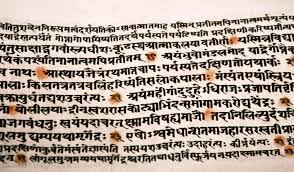
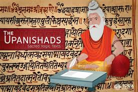
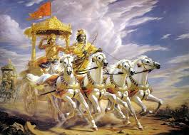
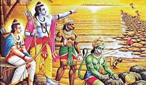
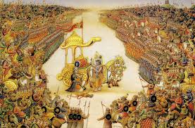
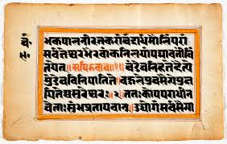

The Vedas are the oldest sacred texts of India and form the foundation of Indian philosophy. They consist of four main collections: Rigveda, Samaveda, Yajurveda, and Atharvaveda.
They discuss rituals, hymns, natural forces, and philosophical ideas about existence and truth.


The Upanishads explore deep philosophical questions about the nature of reality, the soul (Atman), and the ultimate truth (Brahman). They emphasize self-realization and inner knowledge rather than external rituals.
The Bhagavad Gita presents a dialogue between Lord Krishna and Arjuna on the battlefield of Kurukshetra.
It teaches the paths of Karma Yoga, Bhakti Yoga, and Jnana Yoga, offering guidance on duty, devotion, and wisdom.


The Ramayana narrates the life of Lord Rama and highlights ideals such as righteousness, loyalty, sacrifice, and moral conduct. It plays a vital role in shaping Indian cultural and ethical values.
The Mahabharata is one of the world’s longest epics and explores complex themes like duty, justice, power, and human conflict. It presents moral dilemmas that remain relevant even today.


The Puranas preserve mythological stories, genealogies, and cultural traditions. They make philosophical concepts accessible to the common people through narratives and symbolism.
| Scripture | Yug |
|---|---|
| Vedas(Written) | Beginning of Kaliyug |
| Upanishads | End of Dvapar Yug, Starting of Kaliyug |
| Bhagavad Gita | Dvapar Yug |
| Ramayana | Treta Yug |
| Mahabharat | Dvapar Yug |
| Puranas(Written) | End of Dvapar Yug |